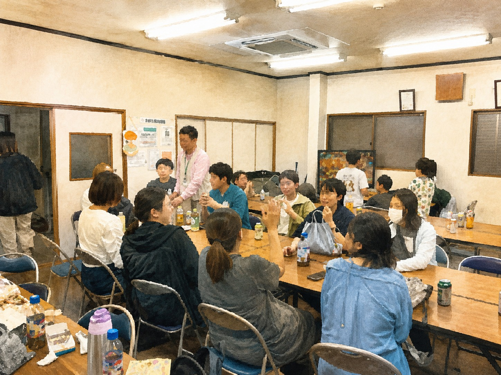
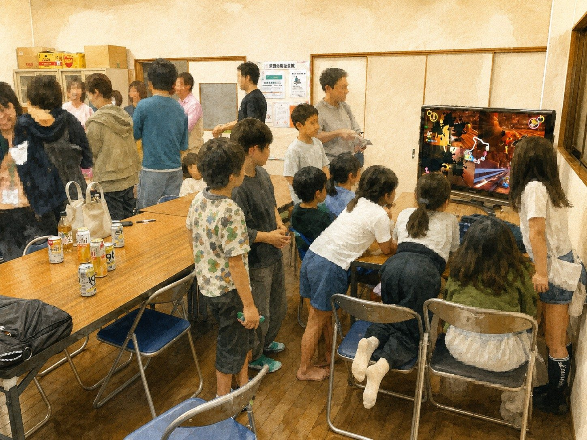
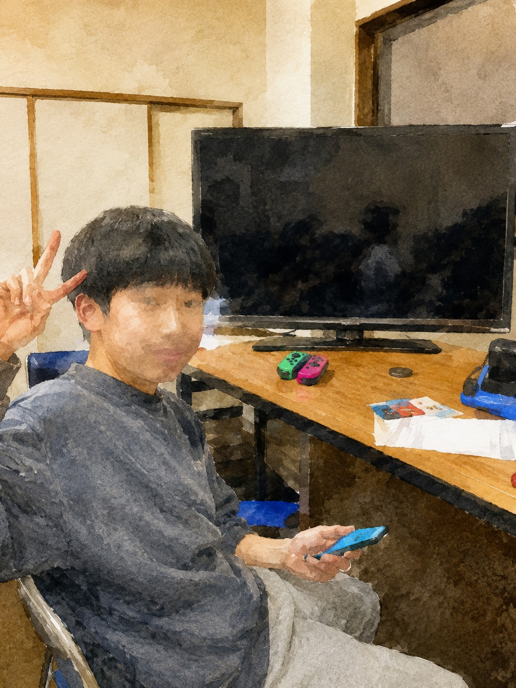

先日、地域の福祉会館にて「ふれあい交流酒場」のプレ開催を行いました！
「地域のつながりをもっと気軽に」をテーマに、現役世代や子育て世代の皆さんが交流できる場として企画した今回のイベント。当日は、大人約20名・子ども約10名にご参加いただき、想像以上に賑やかな時間となりました。
初めて顔を合わせる方も多かったため、受付では名前や趣味などを書いた名札を作成しました。
子どもたちはNintendo Switchを使ったマリオカート大会で大盛り上がり！真剣勝負に歓声が上がり、大人たちもその様子を見ながら自然と会話が広がっていました。



▲ マリオカート大会の優勝者は…5年生の男の子！おめでとう🏆
「地域イベント」というと少しかたく感じることもありますが、今回のプレ開催では、
そんな空気づくりができたように感じています。
参加してくださった皆さま、本当にありがとうございました！今後も、地域の皆さんがゆるくつながれる場として、少しずつ形にしていければと思っています。次回開催もぜひお楽しみに！